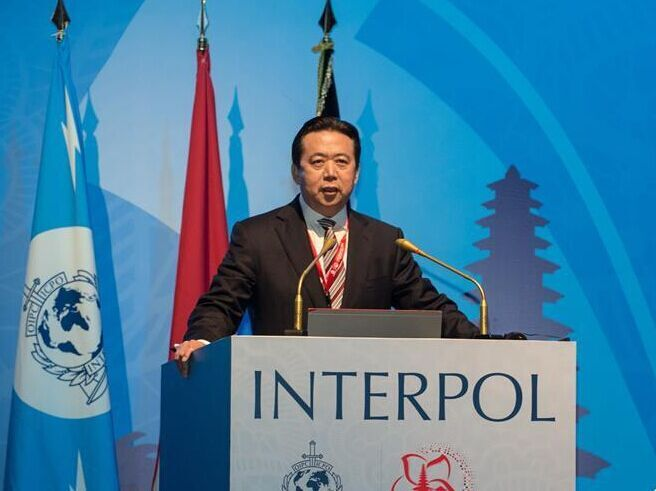
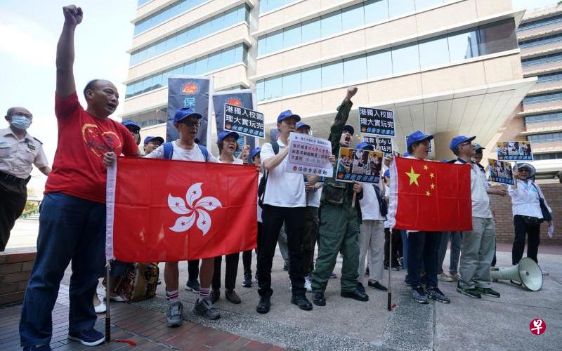
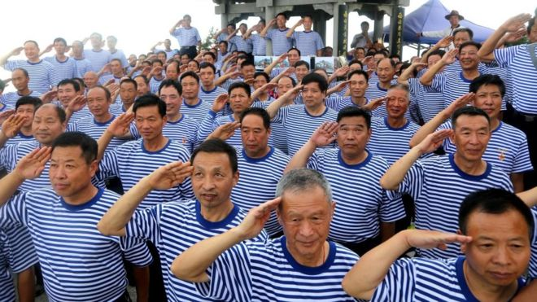

本板块推文本板块推文精选国外主流媒体报道，由编者翻译转载，并提供报道来源网址 (由于某些原因，网站可能无法打开)，推文内容不代表编者主张。本板块一周一推，力 求客观，致力于为大众打造观察中国的新视野。精选国外主流媒体报道，由编者翻译转 载，并提供报道来源网址(由于某些原因，网站可能无法打开)，推文内容不代表编者主 张。本板块一周一推，力求客观，致力于为大众打造观察中国的新视野。
北京——一年前，国际刑警组织负责人、中国人孟宏伟看着他的国家主席习近平自豪地告诉该组织，中国将在全球执法中发挥越来越大的作用。习近平在国际刑警组织的北京大会上向1000名代表说，中国“遵守国际规则”，是世界上最安全的国家之一。
现在，孟宏伟已经与这个不透明、高度政治化的法律制度发生了冲突，批评者认为，当初该制度本应令他失去国际刑警组织任命的资格。周一，中国公安部部长赵克志在北京召开的高级警官会议上表示，孟宏伟被指控收受贿赂和其他罪行。
赵克志和外交部都没有详细说明孟宏伟所谓的违法行为，也没有说它们是在他2016年当选国际刑警组织主席之前还是之后犯下的。
无论如何，孟宏伟突然而神秘的失踪给中国官员，以及那些在让更多中国官员担任领导职务的国际机构留下了一丝不确定的阴云。中国还在试图证明自己能在全球事务中扮演更重要角色，此事对这种努力将是一次严重的、自作自受的打击。
“想象一下，如果有一天，中国出了一位联合国秘书长，那么他有一天也会失踪，”研究中国法律体系的曼谷研究者和人权倡导者迈克尔·卡斯特(Michael Caster)说。“中国在国际规范的所有概念或程序之外运作，其无所顾忌的程度非常令人担忧。”
围绕孟宏伟命运的最大问题是，习近平政府为何促成一个人领导负责协调192个成员国执法活动的组织，之后又批准整垮他。
卡斯特将中国对孟宏伟的处理，与终结了多米尼克·斯特劳斯-卡恩(Dominique Strauss-Kahn)的国际货币基金组织总裁生涯的刑事指控相提并论。该案件的指控涉及2011年纽约市一名酒店女佣的性侵犯指控，它是以透明的方式处理的，而这在中国的起诉中是缺失的，特别是那些在政治上很微妙的案件之中。斯特劳斯-卡恩的案件最终以放弃刑事指控、就一桩民事诉讼达成和解为结束。
孟宏伟受到国家监察委员会的指控，该委员会是一个反腐败机构，于3月份成立，旨在加强中国反对贪污的运动，并给予其更加稳固的法律保护。中国的法院和检察官向共产党负责，很少驳回反腐调查员的调查结果。孟宏伟被拘捕几乎等于定罪。
只经过了几天的沉默——以及孟宏伟的妻子举行的一次不同寻常的新闻发布会——中国才承认它拘捕了孟宏伟，并向国际刑警组织递交了他的辞呈。
习近平追求控制权，让官员陷于惶惶不可终日的境地，即使对于全球组织的高级代表也是如此，孟宏伟已成为最引人注目的例子之一。
孟宏伟的任命和他被拘捕一样，几乎肯定得到了习近平本人的同意。公安部是共产党控制的支柱之一，其最高层的腐败也带有政治背叛的意味。
公安部部长赵克志周一在会议上暗示，孟宏伟的不端行为是周永康留下的“流毒”，作为手握重权、面目阴森的国内最高安全官员，周永康在2015年因腐败指控被判终生监禁。
孟宏伟被查“是其一意孤行，咎由自取的结果，”赵克志说。“表明法律面前无特权和例外。”
64岁的孟宏伟的职业生涯建立在中国执法领域国际影响力和声望提升之上，直到几周前，他显然处于职业生涯的最高点。他当选为国际刑警组织主席，象征着中国的警务在全球受到尊重。
作为国际刑警组织的主席，他住在法国里昂，经常发表演讲，宣传国际刑警组织工作的重点以及中国的贡献。
“中国有一句老话，是我们的祖先孟子说的：‘得道者多助，失道者寡助，’”孟宏伟在今年告诉欧洲警务官员。“这句老话强调了公平正义的重要性。”
孟宏伟表面上的安稳在近几周突然崩塌。他的妻子透露他在去中国期间失踪了。她告诉记者，他发来一条短信，是一把刀子的表情符，这表明他有麻烦了。
在她发出关于丈夫的警报后，法国警察开始询问，国际刑警组织要求中国提供信息。就在那个星期天晚上，在为期一周的假期结束时，中国政府披露孟宏伟已被控制，面临“违法”调查。
除了在国际刑警组织任职之外，孟宏伟还担任中国公安部副部长，他似乎稳健地管理着中国不断增长的国际警务利益和优先事项，因而获得晋升。
他支持中国对联合国在利比亚和其他动荡地区的维和努力做出贡献。他协助监督由中国领导，旨在消除东南亚湄公河暴力犯罪的运动。他参与了中国警方的海外行动，其中包括谋求遣返数百名涉嫌腐败并逃往国外的前中国官员和商人的“猎狐行动”。
外交部发言人陆慷周一在例行新闻发布会上表示，孟宏伟的下台不会削弱中国对国际警察合作的承诺。
“作为联合国安理会常任理事国和负责任大国，中国会继续在国际事务，特别是多边机构中发挥应有作用，”陆慷说。
新的国家监察委员会取代了原来负责调查腐败的共产党委员会，并获得了更广泛的权力，以便在整个官僚机构中追查案件。目前它已提出了似乎与政治腐败擦边的案件——专家们认为这在中国很普遍——暗示其任务包括确保共产党的政治控制。
今年夏天的一个突出案例涉及独立记者陈杰人，他被控欺诈并为其作品经营非法业务。尽管在法律方面的命运还不得而知，但8月份，他在电视上露面忏悔。今年5月，福建省地方政府的一位司机陈勇在处于该委员会当地分支机构监管期间死亡。据中国商业新闻媒体财新报道，他的尸体上有遭受殴打的迹象。
“有人说反腐败就是把权力关进笼子里，”曾经揭露高层腐败的前中国调查记者罗昌平在接受采访时说道。
“但是由谁来把它关进笼子，并且密切监督笼子？”他说。“这是没有得到解决的核心问题。”
中国新疆当局10月9日公布新通过的《新疆维吾尔自治区去极端化条例》，以立法的形式打击被当局视为是“极端化”的言行。新条例即日起生效执行。
“去极端化条例”公布实施的当日，乌鲁木齐市人民检察院召开决战"泛清真化"誓师大会。
条例对“极端化”的定义是：“本条例所称极端化，是指受极端主义影响，渲染偏激的宗教思想观念，排斥、干预正常生产、生活的言论和行为。 ”
“再教育”法律化
根据新的立法，在新疆地区，“自己或强迫他人穿戴蒙面罩袍、佩戴极端化标志”，“非正常蓄须、起名渲染宗教狂热”，都被条例列入“极端化”范围，成为可能招致法律惩治的行为。
“干涉他人与其他民族或者有其他信仰的人员交往交流交融、共同生活的”，“不允许子女接受国民教育，妨碍国家教育制度实施的”，也被视为是“极端化”的表现。
这也就意味着，父亲不同意女儿嫁给一个汉人或其它不同宗教信仰的人，母亲坚持要儿子讲维吾尔语，在新疆都可以被贴上“极端主义”的标签。
“条例”第十四条特别引人注目：“去极端化应当做好教育转化工作，实行个别教育与职业技能教育培训中心教育相结合，法治教育与帮教活动相结合，思想教育、心理辅导、行为矫正与学习国家通用语言文字、学习法律、学习技能相结合，教育转化与人文关怀相结合，增强教育转化实效。 ”
此前，人权组织和国际社会指责中国在新疆设立再教育营，囚禁百万新疆维吾尔人“强迫洗脑”。
新公布的条例表明，中国当局在新疆的“去极端化”“再教育”活动一直在进行，而且首次以立法的形式将其合法化，把对新疆维吾尔人的“再教育”列入法律要求。
“决战泛清真化”
“新疆去极端化条例”还首次为“泛清真化”概念提供了法律解释：
“泛化清真概念：将清真概念扩大到清真食品领域之外的其他领域，借不清真之名排斥、干预他人世俗生活”。
换而言之，新的条例明确“清真”的概念仅限于食品范畴，任何超出食品范围的“清真”都是“清真泛化”，进而违反了“去极端化条例”。
在新疆宣布正式实施“去极端化条例”的当日，乌鲁木齐市人民检察院召开决战“泛清真化”大会，党组书记刘明带头表示要“进一步强化意识形态领域斗争意识”，决战泛清真化”。
作为打击“泛清真化”运动的一部分，会议要求在“公共场所、机关办公场所，所有干警、工作人员之间”必须讲普通话，“党员领导干部尤其要带好头。”
国家机关的食堂里提供清真食品也成为反对”清真泛化“的目标。
乌鲁木齐市人民检察院检察长伊尔夏提·吾斯曼在大会上朗读一篇“亮剑”署名文章，《朋友，你不必专门为我找清真餐厅》，称“我们作为党员干部、国家公职人员，不是信教群体，就不存在饮食方面的问题。”
法律界定“清真”概念
清真，阿拉伯语 حلال，拉丁字母转写英文为 halal，阿拉伯语原意为"合法的"，与哈拉姆（禁忌）相对。
在穆斯林占多数的国家和地区，“清真”不仅指食品和食品的制作加工程序，而是包括生活方式，言语、行为、衣着等都要受到伊斯兰信仰的约束。
例如，一个维吾尔人不用维吾尔语而讲普通话，就可以被一些人视为不够“清真”。
“清真”概念的内涵和外延，在中国社会不同的历史阶段也有不同的解读。
在毛泽东时代的中国，追求个人宗教信仰和表达的空间完全被扼杀，在当时物质极端匮乏的中国社会，“清真”更多地被视为是对少数民族的一种物质上的特别优待，比如享受牛羊肉定量供应，“体现党的民族政策”。
"清真"在汉语中有俭朴纯真、真实自然以及纯洁天真之意。在“毒奶粉”、“毒疫苗”丑闻层出不穷，食品安全、药品安全危机一个接一个的当代中国，“清真”成了“干净”，“注重信誉道义”的标签。
商家把“清真”包装炒作，变成营销手段，导致中国社会上对“清真泛化”的反弹，也可以理解。
但是，新的“去极端化条例”给“清真”提供法律解读，并在穆斯林占人口近一半的新疆，把“清真”的概念缩小到食品的范畴，显然是担心“清真”被解读为“特别”，“与汉人不同”。打击“泛清真化”，被当局提高到与新疆分离主义势力的“意识形态斗争”的高度。
新疆当局立法禁止“泛清真化”，标志着新疆反分离运动已经介入个人日常生活层面。
把“清真”的概念缩小到食品的范畴，条例的执行将对新疆维吾尔人的日常生活造成什么影响，会否引发强烈反弹，还有待观察。
北京有关人士指出，崔永元近来勇揭中国演艺圈黑幕，已被众多网民视为正义的化身，并隐然成为公众对抗不法权势的新希望。官方不仅要保护崔永元的人身安全，也要认真对待他的举报，否则可能引发舆论强烈反弹。
继掀起演艺界查税风暴之后，中国央视前知名主持人崔永元近日又举报上海警方人员涉嫌违法违纪。中共中央政法委下属报纸《法制日报》昨天发表文章力挺崔永元，呼吁上海公安机关尽快拿出不遮丑、不护短、全面公正的调查结论。
文章还对崔永元的安全表示担忧，呼吁要保护好崔永元，称保护崔永元，也是保护了人们对公平公正的期待和对法律、对国家的信任。
北京有关人士指出，崔永元近来勇揭中国演艺圈黑幕，已被众多网民视为正义的化身，并隐然成为公众对抗不法权势的新希望。官方不仅要保护崔永元的人身安全，也要认真对待他的举报，否则可能引发舆论强烈反弹。
《法治日报》昨天也在评论中分析称，崔永元以一己之力对抗整个娱乐圈，已经够遭恨了，税务总局又提出要严惩税务机关内部相关的违法犯罪行为，这无疑是在为崔永元拉仇恨。而举报公安民警同样是一步险棋，麻烦更大。“还有一种危险可能还来自于一些‘脑残粉’，这些家伙脑子不好使，但能量也不小，他们会做出什么无法无天的事很难说。”
今年6月以来，崔永元通过实名举证，爆出演艺界长期以来通过“阴阳合同”等手段大肆偷税漏税的内幕，导致大牌明星范冰冰被罚8.84亿元（人民币，下同，约1.76亿新元），一众演艺公司和明星也陷入查税风暴。崔永元此举在博得大量网民喝彩的同时，也为自己树敌不少，甚至有人在网络上对崔永元发出“死亡威胁”。崔永元自己也感慨：“我的危险来自四面八方。”
点名长宁区警官彭奋父子
但崔永元并未消停。10月7日，他在微博上发布题为《一声长叹一声雷》的贴子，不仅继续炮轰冯小刚等演艺界明星，还指控上海警察和演艺界大腕参与“大欺诈”，并指上海经侦的警察曾经当着他的面，“喝两万一瓶的酒，抽一千一条的烟，几十万的现金用个书包就提走”。
10月10日，上海市公安局官方账号“警民直通车上海”发布通告称，崔永元举报上海公安民警涉嫌违法违纪，调查小组多次联系崔永元，但未得到其回应。警方表示，将继续联系崔永元，希望崔永元也能主动联系警方并支持配合，相关举报问题一旦查证属实，将坚决依法依规处理。
崔永元则反唇相讥，质问上海警方已经将自己的原助手以及与自己合作过的公司“都查个底儿掉，居然还联系不上我？”他同时指名要求上海警方先查长宁区经侦支队副支队长彭奋和其儿子彭明达。
据和讯网昨天报道，彭明达是上海合禾影视投资有限公司副总经理﹑第二大股东，持股30%，认缴出资1050万元。有微博爆料称，彭明达已潜逃国外，摇身一变成了新西兰中文电视台总裁台长。“如今他被推到了风口浪尖上，还能安稳的呆在奥克兰晒太阳吗？”
分析：或有意推进政法系统肃贪
崔永元“怒怼”上海警方得到众多网民的声援，《法制日报》等官媒昨天也加入支持崔永元举报的行列。分析人士认为，这显示官方或许有意借助崔永元的影响力，推进政法系统的肃贪与改革。
《法制日报》文章说，崔永元两次实名公开举报，且一次比一次指向明确，直至点出了当事人的名字。在这种情况下，吃瓜群众与其说是在看笑话，不如说是在等着公安机关调查结论。虽然崔永元对上海公安的回应言辞犀利，很不客气，令人尴尬，但上海公安机关没必要跟他打嘴仗，就像税务部门对范冰冰的调查一样，尽快拿出不遮丑、不护短、全面公正的调查结论来说话，这才是令人信服的态度。
文章指出，崔永元看似四处点火的行为，却在有意无意之间触动了一些深层次的问题。“如果演员天价片酬、偷税漏税只是个人行为是不可能走到今天的，其背后的利益链之深之长，难以想象，很多部门很多人都可能会卷入其中。现在，既然有人敢于捅破这层纸，那么我们就有了深查下去的理由。解决这个问题是对中国法治的一次检验，同时也是一次提升。”
BBC中文网
范冰冰事件揭税负“不公” 未来如何向富人征税
（范冰冰偷逃税2.55亿元，除了补齐这部分税款，她还需缴纳超过6亿元的滞纳金及罚款。交齐这些款项后，她可以不被追究刑事责任。）
中国公安部副部长孟宏伟涉嫌受贿被调查
（根据中国纪委国家监委网站周日（11月7日）发布的消息，国际刑警组织主席、 中国公安部副部长孟宏伟涉嫌违法，目前正接受国家监委监察调查。在孟宏伟“失踪”数日后，中国终于证实了他的下落。）
联合早报
港理大校方让步 学生会44小时绝食行动告终
今年第四次调降 中国央行降准一个百分点
（中国央行从本月15日起对大部分银行降准一个百分点，预计释放1510亿元资金，缓解中小企业和民营企业的融资压力，刺激实体经济增长。公告指出，释放资金可增加对民营企业和创新型企业的支持。）BBC中文网
蓬佩奥访华：充满“火药味”的国务卿与外长会谈
（美国国务卿蓬佩奥亚洲四国之行最后一站访问北京，与中国外长王毅会面。中美关系此刻仍然受贸易战影响，因蓬佩奥在日本、韩国和朝鲜都受到热情款待，但他在旅程最后一站中国，得到的招待却截然不同。）联合早报
针对马凯工作签证不续批事件 《金融时报》：北京加强管控香港
路透社
WeChat rival 'Bullet' removed from App Store over copyright complaint
微软的竞争对手'子弹'已经从App Store中删除了由于版权投诉
（中国聊天应用程序Bullet Messenger - 被吹捧为腾讯控股有限公司（0700.HK）极受欢迎的微信的新贵竞争对手- 称其应用程序已在苹果公司（AAPL.O）App Store推出几个月后被删除由于版权投诉。）BBC中文网
习近平宣传热持续 中国推“平语近人”新节目
（“习思想”似乎成为了中国电视节目的新主题。继湖南卫视一档习近平思想电视问答秀引发广泛讨论之后，中国官方宣传机器又在近日推出了一档新节目。）
山东再爆发退役军人抗议 老兵历史问题待解
（数百名解放军退役老兵上周六（10月6日）至周一从中国各地集结至山东举行抗议，要求当局为当地的一起老兵上访被打事件道歉，并改善老兵待遇。社交媒体上的视频显示，示威者一度与警方发生小规模冲突。）
路透社
Huawei unveils new AI chips amid Chinese technology ambitions
华为在中国技术雄心壮志中推出新的AI芯片
（全球最大的电信设备制造商中国华为技术有限公司（HWT.UL）周三公布了一款可为其服务器供电的人工智能芯片，以推动其新兴的云计算业务。）
China launches anti-halal campaign in Xinjiang
中国在新疆发起反清真运动
（中国新疆地区的首府，主要是穆斯林维吾尔少数民族的家园，发起了反对清真产品的运动，以阻止伊斯兰教渗透世俗生活，助长“极端主义”。）
10月11日
BBC中文网
新疆去极端化条例 力图从日常生活中抹去伊斯兰色彩
联合早报
呼应美国近日严厉批评 蔡英文谴责中国大陆图改变台海现状
（就任总统以来，蔡英文每谈论两岸关系总会重申“四不”主张，即善意不变、承诺不变，不走回对抗的老路，也不在压力下屈服。但昨天，蔡英文未提及“善意”和“承诺”，而是强调“不会贸然升高对抗，也不会屈从退让”，强硬的姿态引发外界联想。）
纽约时报中文网
中国情报官员被引渡至美国，涉经济间谍活动
（司法部官员于周三表示，一名中国情报官员在比利时被捕并被带到美国接受间谍指控，这是特朗普政府对中国间谍活动加大打击的一部分。）
10月12日
BBC中文网
特朗普望11月与习近平会谈 贸易战或将触两国底线
联合早报
崔永元自曝接到死亡威胁
（继上个星期天爆料遭执法部门“抄家式”报复调查后，举报中国女星范冰冰逃税的中国中央电视台前主持人崔永元前天再自曝接获死亡威胁，并表示已做好最坏打算。）
纽约时报中文网
美国将严格限制民用核技术向中国出口
（特朗普政府周四宣布，它将严格限制民用核技术向中国的出口，官方声称这些技术正被转用于新一代中国潜艇、航空母舰和浮动核电站。）
路透社
China opposes Malaysia's release of 11 Uighur Muslims
中国反对马来西亚释放11名维吾尔族穆斯林
（中国周五表示，它坚决反对马来西亚决定释放11名维族穆斯林，并将他们送往土耳其，无视中国要求将他们送到北京。）
10月13日
联合早报
安倍月底访华 一带一路议题料是重点
（中国外交部昨天宣布，日本首相安倍晋三将于本月25日至27日对中国进行正式访问。这将是日本首相时隔七年正式访华。）
官媒发文力挺崔永元 吁调查上海警员违纪
路透社
China September exports surge, creating record surplus with U.S. despite tariffs
尽管有关税，中国9月出口激增，创造了美国的创纪录盈余
（中国庞大的出口引擎在9月出乎意料地进入高位，与美国产生了创纪录的贸易顺差，这可能会加剧北京和华盛顿之间已经激烈的争端。）
Heeding China's call, Hong Kong tightens grip on dissent
听取中国的号召，香港加强了对异议的控制